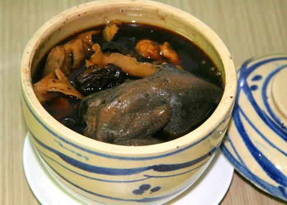

Cùng bắt tay làm thử thôi nào!
Gà ác tiềm thuốc bắc:
Vật liệu:
- 2 con gà ác, 1 gói thuốc bắc.
- 1 trái dừa xiêm, 1/2 thìa cà phê muối, 1/2 thìa cà phê đường.
Cách làm:
- Thuốc bắc các loại như bạch quả, hải sâm, táo tàu… được rửa sạch, để ráo nước.
- Gà ác rửa bằng nước sạch, rửa lại với rượu trắng, lau khô rồi cho vào thố.
- Cho các loại thuốc bắc vào với đường, muối. Cho nước dừa xiêm vào rồi đem chưng cách thủy trong khoảng 2 tiếng đồng hồ là được.
- Gà ác tiềm thuốc bắc có hương thơm đặc trưng của các loại hương liệu, thịt gà mềm thấm gia vị. Gà ác tiềm thuốc bắc có tác dụng chống mệt mỏi, đau đầu, suy nhược cơ thể… được xem như là bài thuốc chống suy nhược, bồi bổ cơ thể rất hiệu quả.
Tiềm cách thủy:
Vật liệu trụng trong nước sôi, sau khi loại bỏ máu và mùi tanh thì chứa ngay trong thố sành, thêm hành, gừng, rượu và nước canh (nước dùng), dán kín nắp thố, đưa vào nồi, đậy nắp kín. Dùng lửa mạnh đun sôi, làm cho nước trong nồi không ngừng sôi liên tục, khoảng 3 giờ thì hoàn tất.
Tiềm bằng lò hấp: vật liệu chứa trong thố sành, cho vào lò hấp tiềm. Vật liệu không cần xào sơ, thêm nước dùng và chất điều vị để tiềm; nhưng cũng có thể xào sơ rồi mới tiềm.
Đặc điểm: mùi thơm ngan ngát, nước canh trong veo, thịt mềm, dễ tiêu hóa.
Gà ác tiềm thuốc dùng cho gia đình
Gà ác tiềm huỳnh kỳ:
Vật liệu: gà ác 1 con, huỳnh kỳ 30g, muối tinh luyện 2g.
Cách làm: gà ác giết mổ, rửa sạch, bỏ móng và nội tạng, trụng qua nước sôi, gà ác cùng huỳnh kỳ cho vào nồi sành, đổ nước ngập qua mặt vật liệu, tiềm không cách thủy, trước tiên bằng lửa mạnh cho sôi, sau chuyển lửa nhỏ tiềm đến khi thịt nhừ, nêm muối gia vị thì hoàn tất.